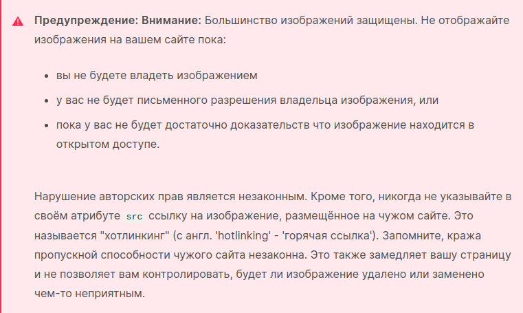

Конкурсное задание для прохождения производственной практики в ВТЕ ЮГО-ВОСТОК: завод по производству гипохлорита натрия.
**Задача: Создание сайта производственного процесса на заводе.**
1. Цель:
- Студент должен показать умение применять свои навыки веб-програмирования для решения реальных задач в промышленности.
2. Условие:
В рамках задания необходимо разработать сайт, который позволит наглядно изобразить процесс процесс гипохлорита натрия, а именно:
1.перейти по данной ссылке
Расчет гипохлорита натрия
2. преобразовать информацию данную на первой странице, в более доступную для понимания, красочную и интерактивную.
Конкурсное задание для прохождения производственной практики в МБУК "ЦБС г. Дзержинский": библиотека
- Разработать афишу (текст и qr код можно брать с образца), сделать ее тематической (к примеру конец октября - хэллоуин, начало ноября день независимости)
- Разработать дизайн логотипа библиотеки
Библиотека
3д моделирование:
- Создать парящий остров с наполнением. Всё содержимое на Ваше усмотрение, но всё должно быть в едином стиле.
- Создать модель локации из книги (для проекта виртуальное чтение)
